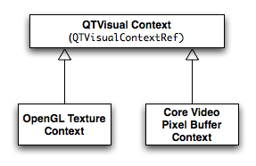
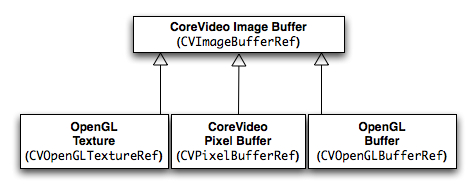

Q:
How do you use QTPixelBufferContextCreate with NewMovieFromProperties? Specifically, I'm trying to create a 32 ARGB bitmap and extract frames from a QuickTime Movie.
A: Both these APIs were added in QuickTime 7 allowing developer to decouple QuickTime from the traditional GWorld rendering path. This Q&A first presents some background material then discusses how these APIs can be used together to extract 32 ARGB pixel buffers containing movie frames.
A companion to this document is the QTPixelBufferVCToCGImage sample which uses the APIs discussed herein.
Background
A QuickTime pixel buffer context is a kind of QuickTime visual context represented by the opaque type QTVisualContextRef. It can be thought of a drawing destination whose output produces CoreVideo pixel buffers with a given set of attributes.
A QuickTime Visual Context in object-oriented terms is an abstract base class for concrete implementations of visual rendering environments. The output of the visual context depends entirely on the implementation. See Figure 1.
QuickTime 7 currently implements two types of visual contexts that can produce CoreVideo image buffers. The first produces a series of OpenGL textures and is created by calling QTOpenGLTextureContextCreate, while the second produces CoreVideo pixel buffers and can be created by calling QTPixelBufferContextCreate. See Figure 2.
Figure 1: QuickTime Visual Context

A CoreVideo Image Buffer in object-oriented terms is an abstract base class for concrete implementations of buffer types. There are currently three; Pixel Buffer (represented by the opaque type CVPixelBufferRef), OpenGL Texture (represented by the opaque type CVOpenGLTextureRef) and OpenGL Buffer (a wrapper around the standard OpenGL pbuffer represented by the opaque type CVOpenGLBufferRef).
Figure 2: CoreVideo Image Buffers

Note: CVPixelBuffers are CVImageBuffers that hold the pixels in main memory. The type of image buffer produced is dependent on the type of visual context being used. A QuickTime OpenGL Texture Context assigned to a Movie will have QuickTime produce a series of OpenGL textures, while a QuickTime Pixel Buffer Context assigned to a Movie will have QuickTime produce a series of CoreVideo pixel buffers.
Note: A QuickTime visual context assigned to a Movie decouples it from any reliance on GWorlds, enabling an independent rendering path. To have a QuickTime Movie use a visual context to produce its output, instantiate the Movie with NewMovieFromProperties (older NewMovieFrom... APIs do not provide this ability).
SetMovieVisualContext may also be used at a later time if the kQTContextPropertyID_VisualContext property was initially set to NULL.
Back to Top 
Creating a QuickTime Pixel Buffer Visual Context
To create a QuickTime pixel buffer context call QTPixelBufferContextCreate. This API takes two parameters and if successful returns a new visual context reference. The visual context attributes dictionary passed into QTPixelBufferContextCreate should have an entry with the type kQTVisualContextPixelBufferAttributesKey, this is another attributes dictionary containing a list of pixel buffer specific attributes (Pixel Buffer attributes are located in CVPixelBuffer.h). See Listing 1.
OSStatus QTPixelBufferContextCreate(CFAllocatorRef allocator,
CFDictionaryRef attributes,
QTVisualContextRef *newPixelBufferContext)
allocator - A reference to a CFAllocator used to allocate memory for the new visual
context.
Use kCFAllocatorDefault to use the current default allocator or create your
own CFAllocator object if for example you would like to use shared memory or
a specific memory layout for this CoreFoundation object.
attributes - A CFDictionary of visual context attribues (Visual Context attributes are
located in ImageCompression.h).
newPixelBufferContext - A pointer to a QTVisualContextRef variable to receive the new
pixel buffer context.
To create a 32bit ARGB QuickTime pixel buffer visual context, use k32ARGBPixelFormat with the function shown in Listing 1. This Pixel Format type is the value for the kCVPixelBufferPixelFormatTypeKey attribute set when building the pixel buffer attributes dictionary. See Listing 2.
Once the visual context is created, a Movie can be assigned to use it. This is done by instantiating a Movie using NewMovieFromProperties and setting the kQTContextPropertyID_VisualContext property appropriately in the property array passed to this API as shown in Listing 3. It can also be set at a later time by calling SetMovieVisualContext.
OSStatus NewMovieFromProperties(ItemCount inputPropertyCount,
QTNewMoviePropertyElement *inputProperties,
ItemCount outputPropertyCount,
QTNewMoviePropertyElement *outputProperties,
Movie *theMovie)
inputPropertyCount - The number of properties in the array passed in inputProperties.
inputProperties - A pointer to an array of property elements (QTNewMoviePropertyElement)
describing how to instantiate the movie.
outputPropertyCount - The number of properties in the array passed in outputProperties.
outputProperties - A pointer to an array of property elements
(QTNewMoviePropertyElement) to receive output parameters. You may
pass NULL if you don't want this information. The caller is
responsible for calling the appropriate routines to dispose of any
property values returned here. Since callers specify the property
classes and IDs, they know who to call to dispose of the property.
theMovie - A pointer to a variable that receives the new movie.
struct QTNewMoviePropertyElement {
QTPropertyClass propClass;
QTPropertyID propID;
ByteCount propValueSize;
QTPropertyValuePtr propValueAddress;
OSStatus propStatus;
};
propClass - A four-character code designating the class of a movie property. See New Movie Property Codes.
propID - The ID of the property.
propValueSize - The size in bytes of the property passed in propValueAddress.
propValueAddress - A pointer to a movie property. Since the data type is fixed for each
element's property class and ID, these is no ambiguity about the data
type for its property value.
propStatus - Indicates any problems with the property. For example, if a property is not
understood by the function it is passed to, this field is set
appropriately.
Only one visual context can be assigned to a Movie at any one time. To disassociate a Movie from its visual context call SetMovieVisualContext using NULL for the visualContext parameter.
Note: QuickTime Visual Contexts and CoreVideo Image Buffers use standard Core Foundation retain/release semantics.
NewMovieFromProperties and SetMovieVisualContext will retain the QuickTime Visual Context passed in.
QTVisualContextRelease is a convenience function which first checks for NULL before calling CFRelease.
See the References section for links to reference documentation and sample code demonstrating what was discussed in this Q&A.
Listing 1: Creating a QTPixelBuffer Visual Context.
/* Create a QuickTime Pixel Buffer Context
This function creates a QuickTime Visual Context which will produce CVPixelBuffers.
*/
OSStatus CreatePixelBufferContext(SInt32 inPixelFormat,
CGRect *inBounds,
QTVisualContextRef *outVisualContext)
{
QTVisualContextRef theContext = NULL;
CFMutableDictionaryRef pixelBufferOptions = NULL;
CFMutableDictionaryRef visualContextOptions = NULL;
OSStatus err = noErr;
*outVisualContext = NULL;
if (0 == inPixelFormat || CGRectIsNull(*inBounds)) {err = paramErr; goto bail;}
// Pixel Buffer attributes
pixelBufferOptions = CFDictionaryCreateMutable(kCFAllocatorDefault, 0,
&kCFTypeDictionaryKeyCallBacks,
&kCFTypeDictionaryValueCallBacks);
if (NULL == pixelBufferOptions) {err = coreFoundationUnknownErr; goto bail;}
// the pixel format we want
SetNumberValue(pixelBufferOptions, kCVPixelBufferPixelFormatTypeKey, inPixelFormat);
// size
SetNumberValue(pixelBufferOptions, kCVPixelBufferWidthKey, inBounds->size.width);
SetNumberValue(pixelBufferOptions, kCVPixelBufferHeightKey, inBounds->size.height);
// alignment
SetNumberValue(pixelBufferOptions, kCVPixelBufferBytesPerRowAlignmentKey, 16);
// QT Visual Context attributes
visualContextOptions = CFDictionaryCreateMutable(kCFAllocatorDefault, 0,
&kCFTypeDictionaryKeyCallBacks,
&kCFTypeDictionaryValueCallBacks);
if (NULL == visualContextOptions) {err = coreFoundationUnknownErr; goto bail; }
// set the pixel buffer attributes for the visual context
CFDictionarySetValue(visualContextOptions,
kQTVisualContextPixelBufferAttributesKey,
pixelBufferOptions);
// create a Pixel Buffer visual context
err = QTPixelBufferContextCreate(kCFAllocatorDefault,
visualContextOptions,
&theContext);
if (err != noErr) goto bail;
*outVisualContext = theContext;
theContext = NULL;
bail:
if (NULL != visualContextOptions) CFRelease(visualContextOptions);
if (NULL != pixelBufferOptions) CFRelease(pixelBufferOptions);
if (NULL != theContext) QTVisualContextRelease(theContext);
return err;
}
Listing 2: Creating a 32 ARGB Pixel Buffer Context
QTVisualContextRef theVisualContext = NULL;
...
status = CreatePixelBufferContext(k32ARGBPixelFormat, &theBounds, &theVisualContext);
if (noErr != status && NULL == theVisualContext) goto bail;
Listing 3: Instantiating a Movie using a Visual Context.
Movie theMovie = NULL;
QTVisualContextRef theVisualContext = NULL;
CFStringRef movieLocation = CFSTR("/Users/stumpyjoe/eleven.mov");
Boolean trueValue = true;
QTNewMoviePropertyElement newMovieProperties[3] = {0};
// create a visual context
...
// movie location
newMovieProperties[0].propClass = kQTPropertyClass_DataLocation;
newMovieProperties[0].propID = kQTDataLocationPropertyID_CFStringPosixPath;
newMovieProperties[0].propValueSize = sizeof(CFStringRef);
newMovieProperties[0].propValueAddress = &movieLocation;
// assign the visual context - could also be NULL
newMovieProperties[1].propClass = kQTPropertyClass_Context;
newMovieProperties[1].propID = kQTContextPropertyID_VisualContext;
newMovieProperties[1].propValueSize = sizeof(theVisualContext);
newMovieProperties[1].propValueAddress = &theVisualContext;
// make the movie active
newMovieProperties[2].propClass = kQTPropertyClass_NewMovieProperty;
newMovieProperties[2].propID = kQTNewMoviePropertyID_Active;
newMovieProperties[2].propValueSize = sizeof(trueValue);
newMovieProperties[2].propValueAddress = &trueValue;
status = NewMovieFromProperties(3, newMovieProperties, 0, NULL, &theMovie);
if (noErr != status || NULL == theMovie) goto bail;
...
// release the visual context if you don't need it anymore
QTVisualContextRelease(theVisualContext);
Listing 4: Utility function for use with Listing 1.
/* Utility to set a SInt32 value in a CFDictionary
*/
OSStatus SetNumberValue(CFMutableDictionaryRef inDict,
CFStringRef inKey,
SInt32 inValue)
{
CFNumberRef number;
number = CFNumberCreate(kCFAllocatorDefault, kCFNumberSInt32Type, &inValue);
if (NULL == number) return coreFoundationUnknownErr;
CFDictionarySetValue(inDict, inKey, number);
CFRelease(number);
return noErr;
}
Back to Top
References
Document Revision History
| Date |
Notes |
| 2008-08-08 |
Editorial |
| 2008-04-24 |
Editorial |
| 2005-09-13 |
Discusses using a QuickTime pixel buffer visual context and NewMovieFromProperties to output frames to pixel buffers. |
Posted: 2008-08-08
|